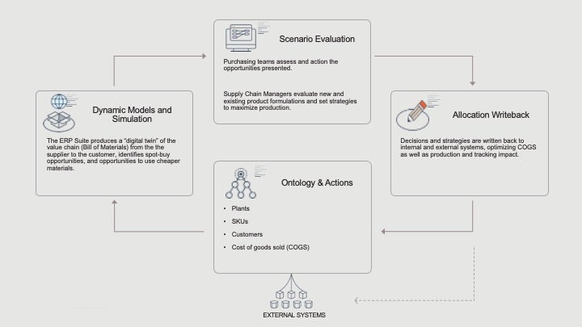

Foundry Mechanisms for Real-Time Supply, Inventory, and Procurement Optimization
A global manufacturer unified seven different ERP systems (SAP, Oracle, AX, legacy systems) using Palantir Foundry. The Ontology served as the canonical business layer, transforming raw ERP signals into a real-time production digital twin capable of driving procurement, scheduling, and allocation decisions at scale.
The end-to-end workflow forms a closed-loop operational system that connects ingestion, harmonization, digital twin modeling, decision applications, and writeback actions.
| Phase | Mechanism (Foundry) | Functionality |
|---|---|---|
| Data Ingestion | Contours, Pipeline Builder, ERP Connectors | Connects 7+ ERPs and harmonizes BOMs, work orders, demand, lead times, and supplier data into versioned datasets. |
| Transformation | Code Workbooks, Visual Pipelines | Normalizes production calendars, computes consumption forecasts, transforms multi-ERP schemas into unified canonical structures. |
| Ontology Modeling | Ontology Builder, Lineage Engine | Defines canonical objects (Plant, Material, Supplier, Work Order, Inventory Position) with relationships powering the digital twin. |
| Digital Twin | Ontology Runtime, Simulation Kernel | Computes stockout risks, supply coverage, cross-plant reallocation signals, and simulates demand/supplier disruptions. |
| Operational Apps | App Builder, Alerts, Tasking | Provides planner surfaces for material risk, reallocation recommendations, purchase order adjustments, and exception handling. |
| Action Execution | Writeback APIs | Updates ERP systems with purchase orders, transfer orders, and schedule changes, completing the analytics→action loop. |
SAP / Oracle / AX / Legacy ERPs / WMS / TMS / Forecasts
│
▼
┌──────────────────────────────────────────────────────────────────┐
│ INGESTION & HARMONIZATION │
│ Foundry Pipelines, ERP Connectors, CDC Feeds │
└──────────────────────────────────────────────────────────────────┘
│
▼
┌──────────────────────────────────────────────────────────────────┐
│ TRANSFORMATION LAYER │
│ BOM Normalization • Lead Times • Consumption Forecasts │
└──────────────────────────────────────────────────────────────────┘
│
▼
┌──────────────────────────────────────────────────────────────────┐
│ ONTOLOGY (CANONICAL OBJECT MODEL) │
│ Plant • Material • Supplier • Work Order • Inventory Position │
└──────────────────────────────────────────────────────────────────┘
│
▼
┌──────────────────────────────────────────────────────────────────┐
│ DIGITAL TWIN │
│ Stockout Prediction • Coverage Windows • What-if Simulations │
└──────────────────────────────────────────────────────────────────┘
│
▼
┌──────────────────────────────────────────────────────────────────┐
│ PLANNER APPLICATIONS │
│ Reallocation Signals • PO Optimization • Alerts & Tasking │
└──────────────────────────────────────────────────────────────────┘
│
▼
┌──────────────────────────────────────────────────────────────────┐
│ ACTION & WRITEBACK │
│ ERP Updates (POs, Transfers, Schedules) │
└──────────────────────────────────────────────────────────────────┘
